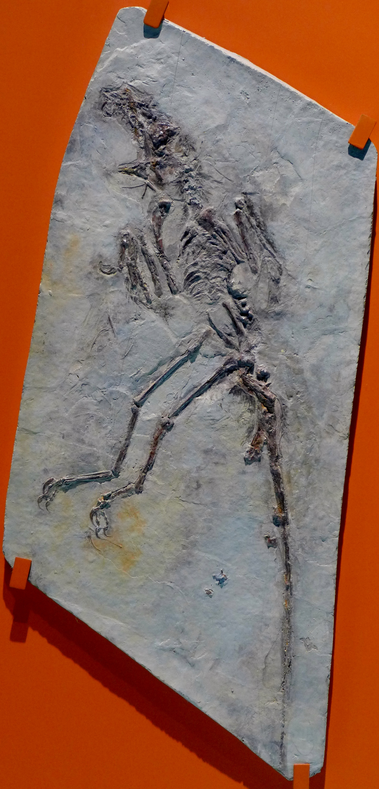
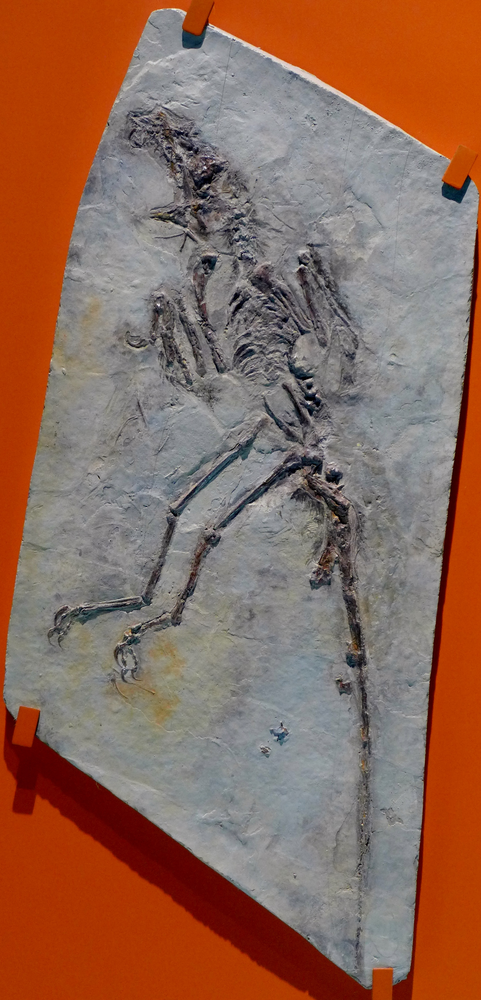

19世紀的科學家，在比較了恐龍和現生鳥類的後肢骨骼後，發現這兩種在外型上截然不同的動物， 有許多相似之處，於是更大膽推論恐龍和鳥是有親緣關係的。
為什麼始祖鳥是「鳥類」？
- 請同學們觀察前方的動物與介紹，觀察看看這幾類動物繁殖的差異!
- 找不到答案嗎!?請點選下面的"顯示答案"!!
1861年，在德國索倫霍芬發現了一隻披有羽毛的小型恐龍化石。這隻體型像一隻鴿子的化石，口中長有尖牙， 批有羽毛的前肢和後肢的長度差不多，前肢長有利爪，還有相當完整堅挺的尾巴。這些都是小型肉食性恐龍的特徵。 科學家深信，如果不是那留在化石上的羽毛印痕，大家還誤以為那只是另一種恐龍而已， 這化石顯然是連接恐龍與鳥演化途徑的最佳證物，於是便以「始祖鳥」命名之。
始祖鳥的發現，更支持了鳥是從恐龍演化來的想法，這種想法也成為19世紀末到20世紀初的主流想法。
來自中國帶有羽毛的恐龍
 

來自中國帶有羽毛的恐龍─到了90年代，更多的研究支持鳥起源自小型肉食性恐龍的想法，如果這想法是正確的話， 在這類恐龍演化到鳥的過程中，應該會有一些帶有羽毛的中間類型吧！
而支持這種想法的重要證據終於在1996年之後，陸續在中國東北的遼寧省發現。最早發現的一種稱為「中國龍鳥」的小型肉食性恐龍， 其背部長有稠密的絨毛。稍後在「尾羽龍」及「原始組鳥」的化石上，已看到與現生鳥類相似的真羽； 還有1999年的「千禧中國鳥龍」及2003年的「四翼恐龍」(顧氏小盜龍)等一系列的化石發現，為鳥類源自恐龍論點提出強而有利的證據。
雖然有眾多的化石與理論支持，但仍有少部分科學家認為鳥和帶毛恐龍是因為有相近的生活方式，所以才都長有羽毛。 這一群科學家更已BAND(Birds Are Not Dinosaurs)，「鳥不是恐龍」一名自居。